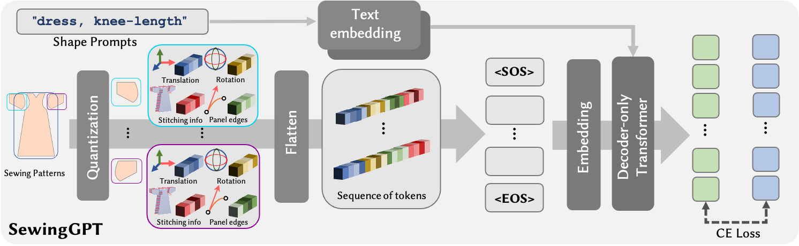
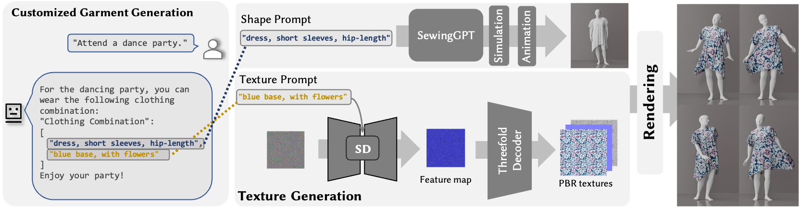
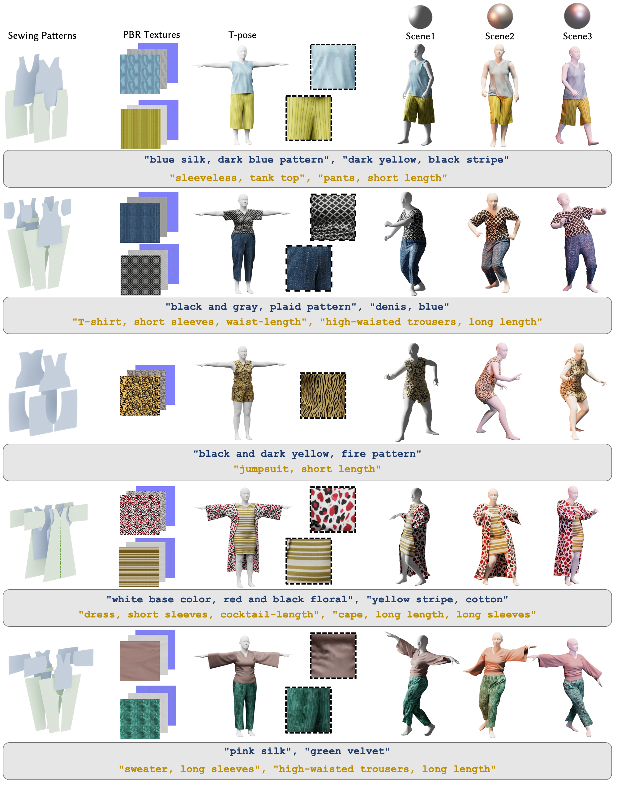

Apparel's significant role in human appearance underscores the importance of garment digitalization for digital human creation. Recent advances in 3D content creation are pivotal for digital human creation. Nonetheless, garment generation from text guidance is still nascent. We introduce a text-driven 3D garment generation framework, DressCode, which aims to democratize design for novices and offer immense potential in fashion design, virtual try-on, and digital human creation. For our framework, we first introduce SewingGPT, a GPT-based architecture integrating cross-attention with text-conditioned embedding to generate sewing patterns with text guidance. We also tailored a pre-trained Stable Diffusion for high-quality, tile-based PBR texture generation. By leveraging a large language model, our framework generates CG-friendly garments through natural language interaction. Our method also facilitates pattern completion and texture editing, streamlining the design process through user-friendly interaction. This framework fosters innovation by allowing creators to freely experiment with designs and incorporate unique elements into their work, thereby igniting new ideas and artistic possibilities. With comprehensive evaluations and comparisons with other state-of-the-art methods, our method showcases the best quality and alignment with input prompts. User studies further validate our high-quality rendering results, highlighting its practical utility and potential in production settings.

Overview of our SewingGPT pipeline. We quantize sewing patterns to the sequence of tokens and adopt a GPT-based architecture to generate the tokens autoregressively. Our SewingGPT enables users to generate highly diverse and high-quality sewing patterns under text prompt guidance.

Overview of our entire DressCode pipeline for customized garment generation. We employ a large language model to obtain shape prompts and texture prompts with natural language interaction and utilize the SewingGPT and a fine-tuned Stable Diffusion for high-quality and CG-friendly garment generation.

@misc{he2024dresscode,
title={DressCode: Autoregressively Sewing and Generating Garments from Text Guidance},
author={Kai He and Kaixin Yao and Qixuan Zhang and Jingyi Yu and Lingjie Liu and Lan Xu},
year={2024},
eprint={2401.16465},
archivePrefix={arXiv},
primaryClass={cs.CV}
}